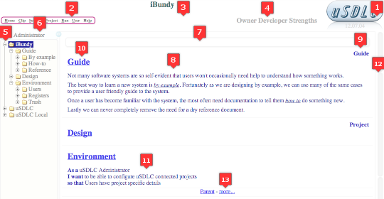

Driving USDLC
The hardest part of a new tool is the blank page or the empty file that comes with a newly installed system. Here we look at the blank page that is a uSDLC install for a virgin project.
The Empty Slate
When you create a new project or add uSDLC to an existing project, a template is copied so that the slate is not completely blank.

-
Logo: Click on the uSDLC logo to maximise vertical viewing space.
-
Menu: The uSDLC menu is parked here when a section is not in focus. It can be driven with the mouse or by typing the underlined letters.
-
Page title: The page title is moved from the document body as part of the display process. It can be edited like any other section.
-
News: By default the news banner displays are from the uSDLC blog. Click on them for more detail.
-
Navigator: Display and navigation of the uSDLC documents for all projects. You can also move, copy and delete sections from here - by mouse or keyboard. The item colour indicates the state of completeness for a section.
-
User: Name of the logged in user. Click on it to go to a user home page. Administrator can do anything, Guest can only read public pages.
-
Synopsis: A synopsis here is displayed on the parent page under the page title. Opening a page with a blank synopsis triggers a form to fill in by page type.
-
Section: A page is made up of sequential sections. uSDLC includes a wysiwyg editor called Ckeditor that loads and saves the selected section. Anything HTML can support is fair game - including images, forms, links and styles.
-
Section Type: Sections have typed that you specify when they are created. The types are not rigid, but they do give uSDLC clues on how to treat sections. Mostly they are there as a visual indication of project structure.
-
Section Titles: When you create a new section you are asked to enter a title. Titles are not necessary, but they are a convenience as well as a good visual structure aid. If the title (or any other link in the section) points to another page on the site, then the synopsis for that page is also displayed.
-
Ubiquitous language: When you first enter a newly created page you are asked to fill in a form to create the synopsis. The form is dependent on the parent section type, but mostly prompts for responses in a ubiquitous design language. Again it is optional. Leaving all the fields blank will place you in editor mode to fill in the synopsis as you see fit.
-
Intra-page navigation: Each link to the sausage represents one section on the page. Hover over a link to see the section title. Click on the link to focus on a section.
-
Footer: A raw footer contains a link to the parent page. The value comes with the more... selection including authorisation and page-wide scripting.
Guide
The Navigator
The navigator is the tree view on the left of the page. Every reference in a page to a child page shows as an item on the tree - in the order they are on the parent page.
Navigation
Clicking on a name in the tree will display the contents and open the tree view to show children. To open or close a tree level without changing the page on display, click on the +/-.
The navigator can gain focus with a mouse click or by pressing Tab. Once in focus you can move around with the arrow keys. Open a page by pressing space.
Content manipulation
It is possible to rename, move and delete pages from the content tree by mouse or keyboard shortcut.
-
Create (c): create a new section pointing to a child page
-
Rename (r): rename the node in focus
-
Move (shift-up/down/left/right): move the mode in focus. The mouse allows for larger moves
-
Copy (ctrl-c): Take a copy of the current page
-
Cut (ctrl-x): Take a copy of the current page and remove the original (on paste)
-
Paste (ctrl-v): place the copy as the last child of the section on focus
-
Delete (del): delete a section/page by moving it to Environment / Trash
Hiding
A blue icon to the top right of the navigator causes the navigator to slide in and out of site as needed.
Guide
Multiple views
It is useful to be able to review different parts of the design at the same time. Holding the shift key down while selecting any page will open that page in a new window. It is a full uSDLC window. but with the tree minimised to give more real-estate to the page itself.
Guide
User Home Pages
Above the navigator is the name of the current user. This is also a link to the user home page. Use your home page as a launch-pad and as a place to build up content that is not ready for public consumption.
Guide
The Synopsis
The first section on a page is slightly special. It will be displayed on the parent page under the title - as a synopsis. If it is blank when you go to a page you are presented with a dialog to help use ubiquitous language and the 5 whys to provide a design focus for the page.
Guide
Sections
A section is the core unit for uSDLC. It can be edited in-situ, moved and activated. It can be just text, hold a link to a child page or refer to activation scripts in many DSL and computer languages. Nothing in a section is set in store. Links to children or scripts can be removed or added. Even the section type can be changed or deleted.
Guide
Footers
Every new page has a footer section with a link to its parent page. The more... link allows the addition of additional page-wide information.
-
Setup: is a script in any computer language known to uSDLC that is run prior to any scripts on the page. It is automatically generated and filled in for pages that include scenarios in the given/when/then format.
-
Cleanup: is a rarely used script to clean up after an scripts run on the page. It can be used to restore database tables or remove created files.
-
Instrument: Automatically created on a page with scenarios to unstrument the human readable commands.
-
Groups: a list of groups that can have access to this and child pages.
-
Script: a script in any language. Normally used to support scripts and scenarios on the page.